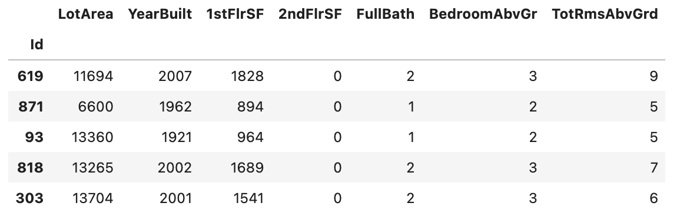

Intermediate Machine Learning
Introduction
- tackle data types often found in real-world datasets (missing values, categorical variables),
- design pipelines to improve the quality of your machine learning code,
- use advanced techniques for model validation (cross-validation),
- build state-of-the-art models that are widely used to win Kaggle competitions (XGBoost), and
- avoid common and important data science mistakes (leakage).
import pandas as pd
from sklearn.model_selection import train_test_split
# Read the data
X_full = pd.read_csv('../input/train.csv', index_col='Id')
X_test_full = pd.read_csv('../input/test.csv', index_col='Id')
# Obtain target and predictors
y = X_full.SalePrice
features = ['LotArea', 'YearBuilt', '1stFlrSF', '2ndFlrSF', 'FullBath', 'BedroomAbvGr', 'TotRmsAbvGrd']
X = X_full[features].copy()
X_test = X_test_full[features].copy()
# Break off validation set from training data
X_train, X_valid, y_train, y_valid = train_test_split(X, y, train_size=0.8, test_size=0.2,
random_state=0)X_train.head()
from sklearn.ensemble import RandomForestRegressor
# Define the models
model_1 = RandomForestRegressor(n_estimators=50, random_state=0)
model_2 = RandomForestRegressor(n_estimators=100, random_state=0)
model_3 = RandomForestRegressor(n_estimators=100, criterion='absolute_error', random_state=0)
model_4 = RandomForestRegressor(n_estimators=200, min_samples_split=20, random_state=0)
model_5 = RandomForestRegressor(n_estimators=100, max_depth=7, random_state=0)
models = [model_1, model_2, model_3, model_4, model_5]from sklearn.metrics import mean_absolute_error
# Function for comparing different models
def score_model(model, X_t=X_train, X_v=X_valid, y_t=y_train, y_v=y_valid):
model.fit(X_t, y_t)
preds = model.predict(X_v)
return mean_absolute_error(y_v, preds)
for i in range(0, len(models)):
mae = score_model(models[i])
print("Model %d MAE: %d" % (i+1, mae))
# Fill in the best model
best_model = model_3
# Check your answer
step_1.check()# Define a model
my_model = RandomForestRegressor(n_estimators=77) # Your code here
# Check your answer
step_2.check()# Fit the model to the training data
my_model.fit(X, y)
# Generate test predictions
preds_test = my_model.predict(X_test)
# Save predictions in format used for competition scoring
output = pd.DataFrame({'Id': X_test.index,
'SalePrice': preds_test})
output.to_csv('submission.csv', index=False)Missing Values
Three Approaches
1) A Simple Option: Drop Columns with Missing Values
The simplest option is to drop columns with missing values.

# Get names of columns with missing values
cols_with_missing = [col for col in X_train.columns
if X_train[col].isnull().any()]
# Drop columns in training and validation data
reduced_X_train = X_train.drop(cols_with_missing, axis=1)
reduced_X_valid = X_valid.drop(cols_with_missing, axis=1)
print("MAE from Approach 1 (Drop columns with missing values):")
print(score_dataset(reduced_X_train, reduced_X_valid, y_train, y_valid))2) A Better Option: Imputation
Imputation fills in the missing values with some number. For instance, we can fill in the mean value along each column.

from sklearn.impute import SimpleImputer
# Imputation
my_imputer = SimpleImputer()
imputed_X_train = pd.DataFrame(my_imputer.fit_transform(X_train))
imputed_X_valid = pd.DataFrame(my_imputer.transform(X_valid))
# Imputation removed column names; put them back
imputed_X_train.columns = X_train.columns
imputed_X_valid.columns = X_valid.columns
print("MAE from Approach 2 (Imputation):")
print(score_dataset(imputed_X_train, imputed_X_valid, y_train, y_valid))3) An Extension To Imputation
Imputation is the standard approach, and it usually works well. However, imputed values may be systematically above or below their actual values (which weren’t collected in the dataset). Or rows with missing values may be unique in some other way. In that case, your model would make better predictions by considering which values were originally missing.

# Make copy to avoid changing original data (when imputing)
X_train_plus = X_train.copy()
X_valid_plus = X_valid.copy()
# Make new columns indicating what will be imputed
for col in cols_with_missing:
X_train_plus[col + '_was_missing'] = X_train_plus[col].isnull()
X_valid_plus[col + '_was_missing'] = X_valid_plus[col].isnull()
# Imputation
my_imputer = SimpleImputer()
imputed_X_train_plus = pd.DataFrame(my_imputer.fit_transform(X_train_plus))
imputed_X_valid_plus = pd.DataFrame(my_imputer.transform(X_valid_plus))
# Imputation removed column names; put them back
imputed_X_train_plus.columns = X_train_plus.columns
imputed_X_valid_plus.columns = X_valid_plus.columns
print("MAE from Approach 3 (An Extension to Imputation):")
print(score_dataset(imputed_X_train_plus, imputed_X_valid_plus, y_train, y_valid))Conclusion
As is common, imputing missing values (in Approach 2 and Approach 3) yielded better results, relative to when we simply dropped columns with missing values (in Approach 1).
# Fill in the line below: How many rows are in the training data?
num_rows = len(X_train.index)
# Fill in the line below: How many columns in the training data
# have missing values?
num_cols_with_missing = (X_train.isnull().sum() > 0).sum()
# Fill in the line below: How many missing entries are contained in
# all of the training data?
tot_missing = X_train.isnull().sum().sum()
# Check your answers
step_1.a.check()# Fill in the line below: get names of columns with missing values
# Your code here
# Fill in the lines below: drop columns in training and validation data
reduced_X_train = X_train.drop([col for col in X_train.columns
if X_train[col].isnull().any()], axis=1)
reduced_X_valid = X_valid.drop([col for col in X_valid.columns
if X_valid[col].isnull().any()], axis=1)
# Check your answers
step_2.check()from sklearn.impute import SimpleImputer
# Fill in the lines below: imputation
my_imputer = SimpleImputer() # Your code here
imputed_X_train = pd.DataFrame(my_imputer.fit_transform(X_train))
imputed_X_valid = pd.DataFrame(my_imputer.transform(X_valid))
# Fill in the lines below: imputation removed column names; put them back
imputed_X_train.columns = X_train.columns
imputed_X_valid.columns = X_valid.columns
# Check your answers
step_3.a.check()# Preprocessed training and validation features
final_X_train = pd.DataFrame(my_imputer.fit_transform(X_train))
final_X_valid = pd.DataFrame(my_imputer.transform(X_valid))
# Check your answers
step_4.a.check()# Define and fit model
model = RandomForestRegressor(n_estimators=100, random_state=0)
model.fit(final_X_train, y_train)
# Get validation predictions and MAE
preds_valid = model.predict(final_X_valid)
print("MAE (Your approach):")
print(mean_absolute_error(y_valid, preds_valid))# Fill in the line below: preprocess test data
final_X_test = pd.DataFrame(my_imputer.fit_transform(X_test))
# Fill in the line below: get test predictions
preds_test = model.predict(final_X_test)
# Check your answers
step_4.b.check()Categorical Variables
A categorical variable takes only a limited number of values.
- Consider a survey that asks how often you eat breakfast and provides four options: “Never”, “Rarely”, “Most days”, or “Every day”. In this case, the data is categorical, because responses fall into a fixed set of categories.
- If people responded to a survey about which what brand of car they owned, the responses would fall into categories like “Honda”, “Toyota”, and “Ford”. In this case, the data is also categorical.
# Get list of categorical variables
s = (X_train.dtypes == 'object')
object_cols = list(s[s].index)
print("Categorical variables:")
print(object_cols)
Three Approaches
1) Drop Categorical Variables
The easiest approach to dealing with categorical variables is to simply remove them from the dataset. This approach will only work well if the columns did not contain useful information.
drop_X_train = X_train.select_dtypes(exclude=['object'])
drop_X_valid = X_valid.select_dtypes(exclude=['object'])
print("MAE from Approach 1 (Drop categorical variables):")
print(score_dataset(drop_X_train, drop_X_valid, y_train, y_valid))2) Ordinal Encoding
Ordinal encoding assigns each unique value to a different integer.

Not all categorical variables have a clear ordering in the values, but we refer to those that do as ordinal variables.
from sklearn.preprocessing import OrdinalEncoder
# Make copy to avoid changing original data
label_X_train = X_train.copy()
label_X_valid = X_valid.copy()
# Apply ordinal encoder to each column with categorical data
ordinal_encoder = OrdinalEncoder()
label_X_train[object_cols] = ordinal_encoder.fit_transform(X_train[object_cols])
label_X_valid[object_cols] = ordinal_encoder.transform(X_valid[object_cols])
print("MAE from Approach 2 (Ordinal Encoding):")
print(score_dataset(label_X_train, label_X_valid, y_train, y_valid))3) One-Hot Encoding
One-hot encoding creates new columns indicating the presence (or absence) of each possible value in the original data.

In contrast to ordinal encoding, one-hot encoding does not assume an ordering of the categories. Thus, you can expect this approach to work particularly well if there is no clear ordering in the categorical data (e.g., “Red” is neither more nor less than “Yellow”). We refer to categorical variables without an intrinsic ranking as nominal variables.
One-hot encoding generally does not perform well if the categorical variable takes on a large number of values
from sklearn.preprocessing import OneHotEncoder
# Apply one-hot encoder to each column with categorical data
OH_encoder = OneHotEncoder(handle_unknown='ignore', sparse=False)
OH_cols_train = pd.DataFrame(OH_encoder.fit_transform(X_train[object_cols]))
OH_cols_valid = pd.DataFrame(OH_encoder.transform(X_valid[object_cols]))
# One-hot encoding removed index; put it back
OH_cols_train.index = X_train.index
OH_cols_valid.index = X_valid.index
# Remove categorical columns (will replace with one-hot encoding)
num_X_train = X_train.drop(object_cols, axis=1)
num_X_valid = X_valid.drop(object_cols, axis=1)
# Add one-hot encoded columns to numerical features
OH_X_train = pd.concat([num_X_train, OH_cols_train], axis=1)
OH_X_valid = pd.concat([num_X_valid, OH_cols_valid], axis=1)
print("MAE from Approach 3 (One-Hot Encoding):")
print(score_dataset(OH_X_train, OH_X_valid, y_train, y_valid))In this case, dropping the categorical columns (Approach 1) performed worst, since it had the highest MAE score. As for the other two approaches, since the returned MAE scores are so close in value, there doesn’t appear to be any meaningful benefit to one over the other.
In general, one-hot encoding (Approach 3) will typically perform best, and dropping the categorical columns (Approach 1) typically performs worst, but it varies on a case-by-case basis.
# Fill in the lines below: drop columns in training and validation data
drop_X_train = X_train.select_dtypes(exclude=['object'])
drop_X_valid = X_valid.select_dtypes(exclude=['object'])
# Check your answers
step_1.check()from sklearn.preprocessing import OrdinalEncoder
# Drop categorical columns that will not be encoded
label_X_train = X_train.drop(bad_label_cols, axis=1)
label_X_valid = X_valid.drop(bad_label_cols, axis=1)
# Apply ordinal encoder
# Your code here
ordinary_encoder = OrdinalEncoder()
label_X_train[good_label_cols] = ordinary_encoder.fit_transform(X_train[good_label_cols])
label_X_valid[good_label_cols] = ordinary_encoder.transform(X_valid[good_label_cols])
# Check your answer
step_2.b.check()# Get number of unique entries in each column with categorical data
object_nunique = list(map(lambda col: X_train[col].nunique(), object_cols))
d = dict(zip(object_cols, object_nunique))
# Print number of unique entries by column, in ascending order
sorted(d.items(), key=lambda x: x[1])
# Fill in the line below: How many categorical variables in the training data
# have cardinality greater than 10?
high_cardinality_numcols = 3
# Fill in the line below: How many columns are needed to one-hot encode the
# 'Neighborhood' variable in the training data?
num_cols_neighborhood = 25
# Check your answers
step_3.a.check()# Fill in the line below: How many entries are added to the dataset by
# replacing the column with a one-hot encoding?
OH_entries_added = 10000 * 99
# Fill in the line below: How many entries are added to the dataset by
# replacing the column with an ordinal encoding?
label_entries_added = 0
# Check your answers
step_3.b.check()# Columns that will be one-hot encoded
low_cardinality_cols = [col for col in object_cols if X_train[col].nunique() < 10]
# Columns that will be dropped from the dataset
high_cardinality_cols = list(set(object_cols)-set(low_cardinality_cols))
print('Categorical columns that will be one-hot encoded:', low_cardinality_cols)
print('\nCategorical columns that will be dropped from the dataset:', high_cardinality_cols)from sklearn.preprocessing import OneHotEncoder
# Use as many lines of code as you need!
OH_encoder = OneHotEncoder(handle_unknown='ignore', sparse=False)
OH_X_train = pd.DataFrame(OH_encoder.fit_transform(X_train[low_cardinality_cols]))# Your code here
OH_X_valid = pd.DataFrame(OH_encoder.transform(X_valid[low_cardinality_cols])) # Your code here
OH_X_train.index = X_train.index
OH_X_valid.index = X_valid.index
num_X_train = X_train.drop(object_cols, axis=1)
num_X_valid = X_valid.drop(object_cols, axis=1)
OH_X_train = pd.concat([num_X_train, OH_X_train], axis=1)
OH_X_valid = pd.concat([num_X_valid, OH_X_valid], axis=1)
# Check your answer
step_4.check()Pipelines
Pipelines are a simple way to keep your data preprocessing and modeling code organized. Specifically, a pipeline bundles preprocessing and modeling steps so you can use the whole bundle as if it were a single step.
Many data scientists hack together models without pipelines, but pipelines have some important benefits. Those include:
- Cleaner Code: Accounting for data at each step of preprocessing can get messy. With a pipeline, you won’t need to manually keep track of your training and validation data at each step.
- Fewer Bugs: There are fewer opportunities to misapply a step or forget a preprocessing step.
- Easier to Productionize: It can be surprisingly hard to transition a model from a prototype to something deployable at scale. We won’t go into the many related concerns here, but pipelines can help.
- More Options for Model Validation: You will see an example in the next tutorial, which covers cross-validation.
Step 1: Define Preprocessing Steps
Similar to how a pipeline bundles together preprocessing and modeling steps, we use the ColumnTransformer class to bundle together different preprocessing steps. The code below:
- imputes missing values in numerical data, and
- imputes missing values and applies a one-hot encoding to categorical data.
from sklearn.compose import ColumnTransformer
from sklearn.pipeline import Pipeline
from sklearn.impute import SimpleImputer
from sklearn.preprocessing import OneHotEncoder
# Preprocessing for numerical data
numerical_transformer = SimpleImputer(strategy='constant')
# Preprocessing for categorical data
categorical_transformer = Pipeline(steps=[
('imputer', SimpleImputer(strategy='most_frequent')),
('onehot', OneHotEncoder(handle_unknown='ignore'))
])
# Bundle preprocessing for numerical and categorical data
preprocessor = ColumnTransformer(
transformers=[
('num', numerical_transformer, numerical_cols),
('cat', categorical_transformer, categorical_cols)
])Step 2: Define the Model
Next, we define a random forest model with the familiar [RandomForestRegressor](https://scikit-learn.org/stable/modules/generated/sklearn.ensemble.RandomForestRegressor.html) class.
from sklearn.ensemble import RandomForestRegressor
model = RandomForestRegressor(n_estimators=100, random_state=0)Step 3: Create and Evaluate the Pipeline
Finally, we use the [Pipeline](https://scikit-learn.org/stable/modules/generated/sklearn.pipeline.Pipeline.html) class to define a pipeline that bundles the preprocessing and modeling steps. There are a few important things to notice:
- With the pipeline, we preprocess the training data and fit the model in a single line of code. (In contrast, without a pipeline, we have to do imputation, one-hot encoding, and model training in separate steps. This becomes especially messy if we have to deal with both numerical and categorical variables!)
- With the pipeline, we supply the unprocessed features in
X_validto thepredict()command, and the pipeline automatically preprocesses the features before generating predictions. (However, without a pipeline, we have to remember to preprocess the validation data before making predictions.)
from sklearn.metrics import mean_absolute_error
# Bundle preprocessing and modeling code in a pipeline
my_pipeline = Pipeline(steps=[('preprocessor', preprocessor),
('model', model)
])
# Preprocessing of training data, fit model
my_pipeline.fit(X_train, y_train)
# Preprocessing of validation data, get predictions
preds = my_pipeline.predict(X_valid)
# Evaluate the model
score = mean_absolute_error(y_valid, preds)
print('MAE:', score)# Preprocessing for numerical data
numerical_transformer = SimpleImputer(strategy='constant') # Your code here
# Preprocessing for categorical data
categorical_transformer = Pipeline(steps=[
('imputer', SimpleImputer(strategy='most_frequent')),
('onehot', OneHotEncoder(handle_unknown='ignore'))
]) # Your code here
# Bundle preprocessing for numerical and categorical data
preprocessor = ColumnTransformer(
transformers=[
('num', numerical_transformer, numerical_cols),
('cat', categorical_transformer, categorical_cols)
])
# Define model
model = RandomForestRegressor(random_state=1)
# Check your answer
step_1.a.check()# Bundle preprocessing and modeling code in a pipeline
my_pipeline = Pipeline(steps=[('preprocessor', preprocessor),
('model', model)
])
# Preprocessing of training data, fit model
my_pipeline.fit(X_train, y_train)
# Preprocessing of validation data, get predictions
preds = my_pipeline.predict(X_valid)
# Evaluate the model
score = mean_absolute_error(y_valid, preds)
print('MAE:', score)
# Check your answer
step_1.b.check()# Preprocessing of test data, fit model
preds_test = my_pipeline.predict(X_test) # Your code here
# Check your answer
step_2.check()Cross-Validation

So, given these tradeoffs, when should you use each approach?
- For small datasets, where extra computational burden isn’t a big deal, you should run cross-validation.
- For larger datasets, a single validation set is sufficient. Your code will run faster, and you may have enough data that there’s little need to re-use some of it for holdout.
from sklearn.ensemble import RandomForestRegressor
from sklearn.pipeline import Pipeline
from sklearn.impute import SimpleImputer
my_pipeline = Pipeline(steps=[('preprocessor', SimpleImputer()),
('model', RandomForestRegressor(n_estimators=50,
random_state=0))
])from sklearn.model_selection import cross_val_score
# Multiply by -1 since sklearn calculates *negative* MAE
scores = -1 * cross_val_score(my_pipeline, X, y,
cv=5,
scoring='neg_mean_absolute_error')
print("MAE scores:\n", scores)def get_score(n_estimators):
"""Return the average MAE over 3 CV folds of random forest model.
Keyword argument:
n_estimators -- the number of trees in the forest
"""
# Replace this body with your own code
my_pipeline = Pipeline(steps=[
('preprocessor', SimpleImputer()),
('model', RandomForestRegressor(n_estimators=n_estimators, random_state=0))])
scores = -1 * cross_val_score(my_pipeline, X, y, cv=3, scoring='neg_mean_absolute_error')
return scores.mean()
# Check your answer
step_1.check()results = {i: get_score(i) for i in range(50, 450, 50)} # Your code here
# Check your answer
step_2.check()import matplotlib.pyplot as plt
%matplotlib inline
plt.plot(list(results.keys()), list(results.values()))
plt.show()
n_estimators_best = 200
# Check your answer
step_3.check()XGBoost
We refer to the random forest method as an “ensemble method”. By definition, ensemble methods combine the predictions of several models (e.g., several trees, in the case of random forests).
Gradient boosting is a method that goes through cycles to iteratively add models into an ensemble.
It begins by initializing the ensemble with a single model, whose predictions can be pretty naive. (Even if its predictions are wildly inaccurate, subsequent additions to the ensemble will address those errors.)
Then, we start the cycle:
- First, we use the current ensemble to generate predictions for each observation in the dataset. To make a prediction, we add the predictions from all models in the ensemble.
- These predictions are used to calculate a loss function (like mean squared error, for instance).
- Then, we use the loss function to fit a new model that will be added to the ensemble. Specifically, we determine model parameters so that adding this new model to the ensemble will reduce the loss. (Side note: The “gradient” in “gradient boosting” refers to the fact that we’ll use gradient descent on the loss function to determine the parameters in this new model.)
- Finally, we add the new model to ensemble, and …
- … repeat!

XGBoost stands for extreme gradient boosting, which is an implementation of gradient boosting with several additional features focused on performance and speed. (Scikit-learn has another version of gradient boosting, but XGBoost has some technical advantages.)
from xgboost import XGBRegressor
my_model = XGBRegressor()
my_model.fit(X_train, y_train)from sklearn.metrics import mean_absolute_error
predictions = my_model.predict(X_valid)
print("Mean Absolute Error: " + str(mean_absolute_error(predictions, y_valid)))XGBoost has a few parameters that can dramatically affect accuracy and training speed. The first parameters you should understand are:
Parameter Tuning
n_estimators
n_estimators specifies how many times to go through the modeling cycle described above. It is equal to the number of models that we include in the ensemble.
- Too low a value causes underfitting, which leads to inaccurate predictions on both training data and test data.
- Too high a value causes overfitting, which causes accurate predictions on training data, but inaccurate predictions on test data (which is what we care about).
Typical values range from 100-1000, though this depends a lot on the learning_rate parameter discussed below.
my_model = XGBRegressor(n_estimators=500)
my_model.fit(X_train, y_train)early_stopping_rounds
early_stopping_rounds offers a way to automatically find the ideal value for n_estimators. Early stopping causes the model to stop iterating when the validation score stops improving, even if we aren’t at the hard stop for n_estimators. It’s smart to set a high value for n_estimators and then use early_stopping_rounds to find the optimal time to stop iterating.
Since random chance sometimes causes a single round where validation scores don’t improve, you need to specify a number for how many rounds of straight deterioration to allow before stopping. Setting early_stopping_rounds=5 is a reasonable choice. In this case, we stop after 5 straight rounds of deteriorating validation scores.
When using early_stopping_rounds, you also need to set aside some data for calculating the validation scores - this is done by setting the eval_set parameter.
my_model = XGBRegressor(n_estimators=500)
my_model.fit(X_train, y_train,
early_stopping_rounds=5,
eval_set=[(X_valid, y_valid)],
verbose=False)learning_rate
Instead of getting predictions by simply adding up the predictions from each component model, we can multiply the predictions from each model by a small number (known as the learning rate) before adding them in.
This means each tree we add to the ensemble helps us less. So, we can set a higher value for n_estimators without overfitting. If we use early stopping, the appropriate number of trees will be determined automatically.
In general, a small learning rate and large number of estimators will yield more accurate XGBoost models, though it will also take the model longer to train since it does more iterations through the cycle. As default, XGBoost sets learning_rate=0.1.
my_model = XGBRegressor(n_estimators=1000, learning_rate=0.05)
my_model.fit(X_train, y_train,
early_stopping_rounds=5,
eval_set=[(X_valid, y_valid)],
verbose=False)n_jobs
On larger datasets where runtime is a consideration, you can use parallelism to build your models faster. It’s common to set the parameter n_jobs equal to the number of cores on your machine. On smaller datasets, this won’t help.
The resulting model won’t be any better, so micro-optimizing for fitting time is typically nothing but a distraction. But, it’s useful in large datasets where you would otherwise spend a long time waiting during the fit command.
my_model =XGBRegressor(n_estimators=1000, learning_rate=0.05, n_jobs=4)
my_model.fit(X_train,y_train,
early_stopping_rounds=5,
eval_set=[(X_valid,y_valid)],
verbose=False)from xgboost import XGBRegressor
# Define the model
my_model_1 = XGBRegressor() # Your code here
# Fit the model
my_model_1.fit(X_train, y_train) # Your code here
# Check your answer
step_1.a.check()from sklearn.metrics import mean_absolute_error
# Get predictions
predictions_1 = my_model_1.predict(X_valid) # Your code here
# Check your answer
step_1.b.check()# Calculate MAE
mae_1 = mean_absolute_error(y_valid, predictions_1) # Your code here
# Uncomment to print MAE
# print("Mean Absolute Error:" , mae_1)
# Check your answer
step_1.c.check()# Define the model
my_model_2 = XGBRegressor(n_estimators=100, learning_rate=0.05) # Your code here
# Fit the model
my_model_2.fit(X_train, y_train) # Your code here
# Get predictions
predictions_2 = my_model_2.predict(X_valid) # Your code here
# Calculate MAE
mae_2 = mean_absolute_error(y_valid, predictions_2) # Your code here
# Uncomment to print MAE
# print("Mean Absolute Error:" , mae_2)
# Check your answer
step_2.check()# Define the model
my_model_3 = XGBRegressor(n_estimators=5, learning_rate=0.1)
# Fit the model
my_model_3.fit(X_train, y_train) # Your code here
# Get predictions
predictions_3 = my_model_3.predict(X_valid)
# Calculate MAE
mae_3 = mean_absolute_error(y_valid, predictions_3)
# Uncomment to print MAE
# print("Mean Absolute Error:" , mae_3)
# Check your answer
step_3.check()Data Leakage
Data leakage (or leakage) happens when your training data contains information about the target, but similar data will not be available when the model is used for prediction. This leads to high performance on the training set (and possibly even the validation data), but the model will perform poorly in production.
In other words, leakage causes a model to look accurate until you start making decisions with the model, and then the model becomes very inaccurate.
Target leakage
Target leakage occurs when your predictors include data that will not be available at the time you make predictions. It is important to think about target leakage in terms of the timing or chronological order that data becomes available, not merely whether a feature helps make good predictions.

Train-Test Contamination
A different type of leak occurs when you aren’t careful to distinguish training data from validation data.
Recall that validation is meant to be a measure of how the model does on data that it hasn’t considered before. You can corrupt this process in subtle ways if the validation data affects the preprocessing behavior. This is sometimes called train-test contamination.